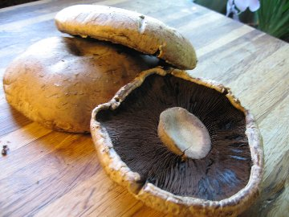

Welcome Mushroom Culture
This website is an introduction to mushrooms. There are many types of mushrooms and this website is in no way exhaustive of the information needed to fully identify foraged mushrooms. Never eat wild unidentified mushrooms as they may be poisonus. Mushrooms can be deadly so be sure your mushrooms are properly identified. This can not be stress enough. Don't eat any fungus that you don't know, aren't sure of, or otherwise think you may get a power-up from.... Unknown mushrooms CAN KILL YOU!!!
 Portobella Mushrooms Fig.2Mushrooms are like the fruit of a plant, except that the "seeds" it produces are in fact millions of microscopic spores that form in the gills or pores underneath the mushroom's cap. Mushrooms are fungi. They belong in a kingdom of their own, separate from plants and animals. Fungi differ from plants and animals in the way they obtain their nutrients. There are four types of mushrooms: saprotrophic, mycorrhizal, parasitic, and endophytic. While there are many different types of mushrooms within these categories, not all of them are edible. Since some may be poisonous or hallucinogenic, it's important to be careful if you ever try to pick mushrooms in the wild.